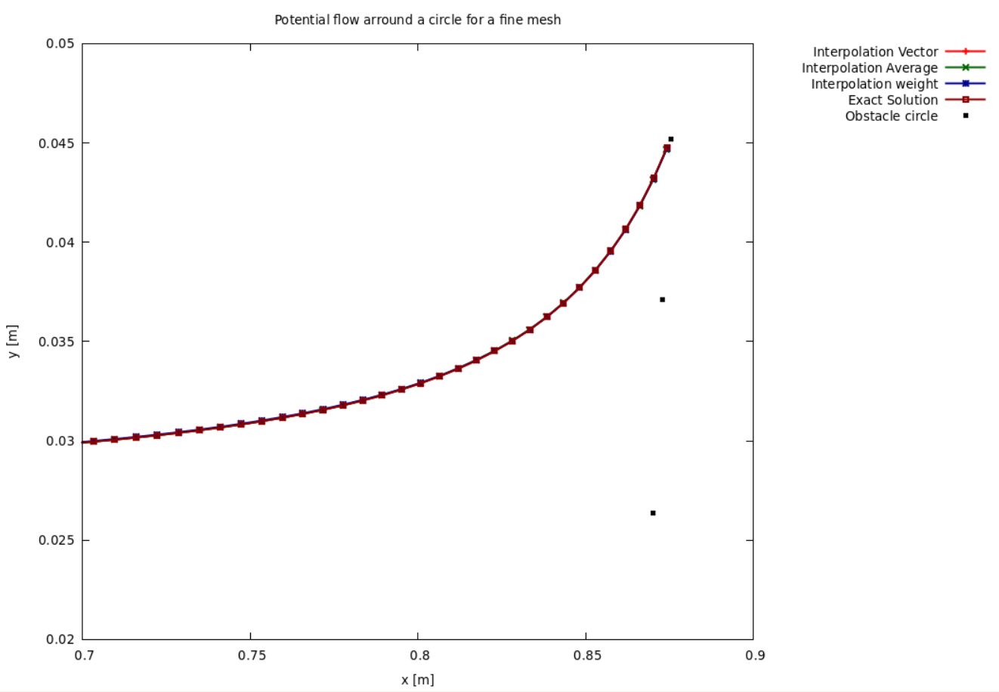
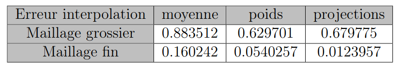
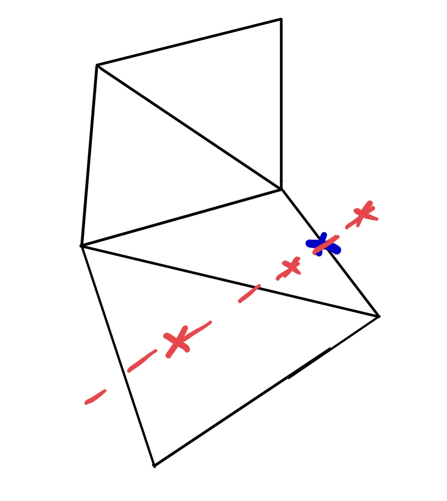
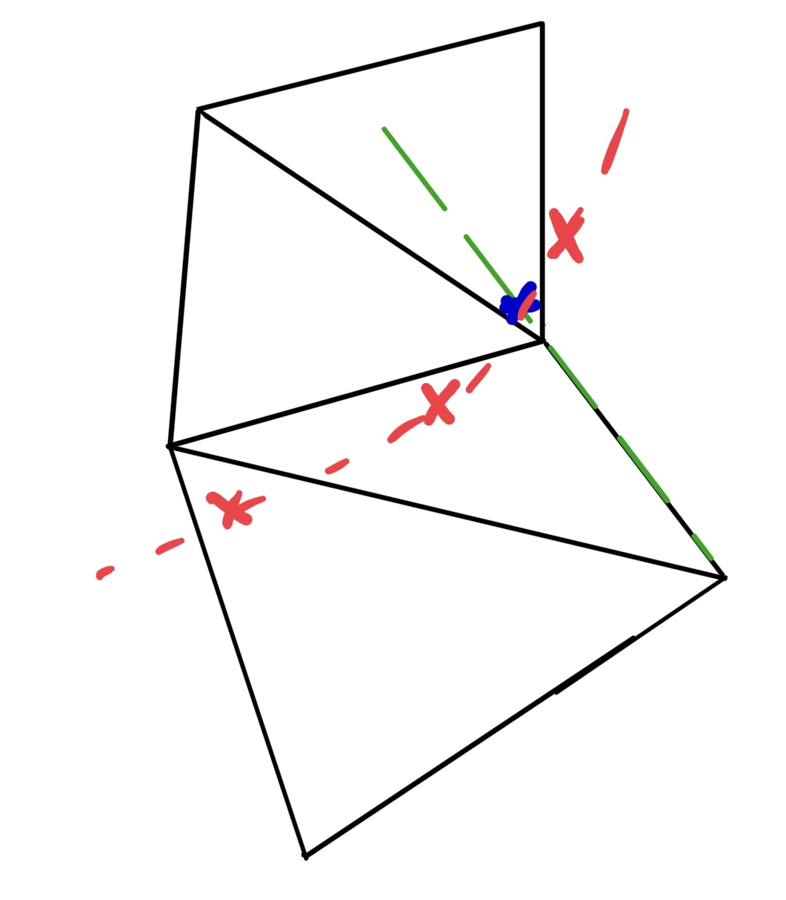
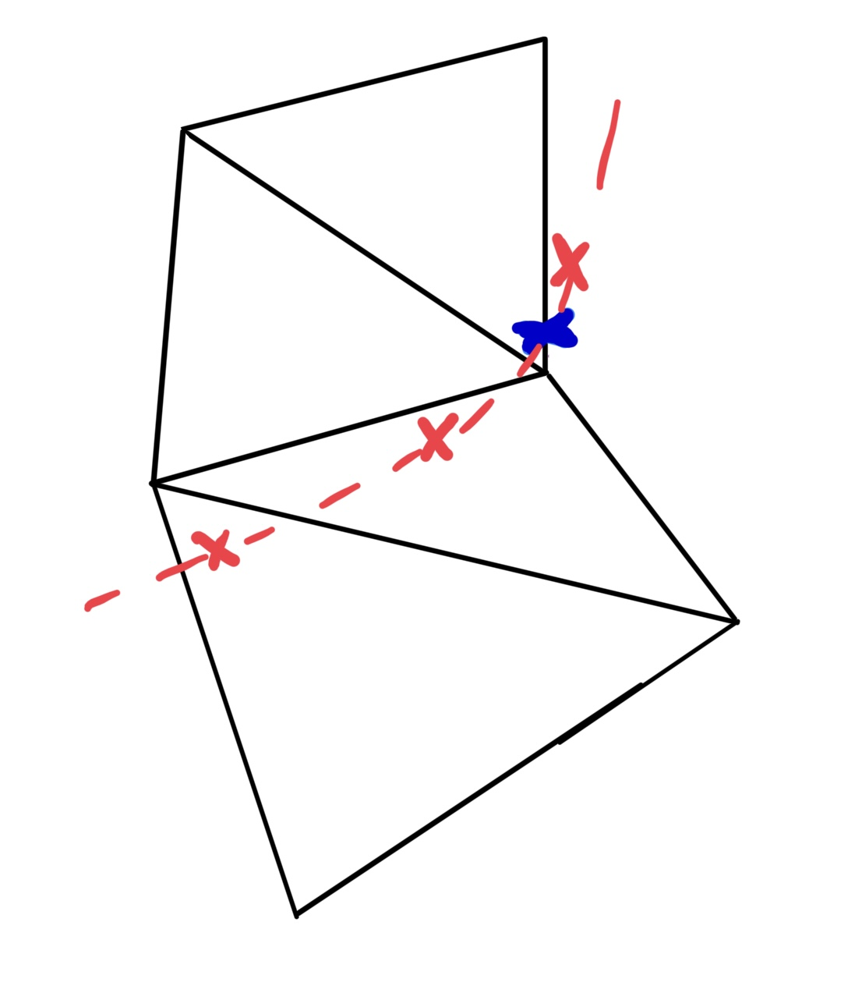

Ajout d'un maillage

Figure 1 : Maillage autour d'un cercle

Figure 2 : Maillage autour d'une aile NACA 0012
Présentation des maillages :
Le but de notre deuxième partie était de se mettre à travailler avec des maillages en gardant un écoulement potentiel. Ceci nous permet de commencer à implémenter les fonctionnalités importantes du code de la partie 3 qui consistera à étudier un écoulement d'Euler. Les écoulements sont donnés sous la forme d'un fichier su2 et d'un fichier vtk qui présentent les vitesses et la densité de l'écoulement en chaque point d'un maillage non structuré triangulaire à l'instant initial.
On crée des maillages autour de deux géométries. On considère d'abord un écoulement autour d'un maillage circulaire de façon à valider nos résultats en les comparant à la partie 1. On crée un maillage grossier ainsi qu'un maillage fin (voir Figure 1). Ensuite, on considère un écoulement autour d'une aile NACA. On maille l'espace avec (voir Figure 2).
Parcours du maillage :
A chaque itération en temps, il faut recalculer la position de la goutte dans le maillage. Nous avons observé que parcourir tout le maillage à chaque itération était très coûteux : avec le logiciel gprof on estime à environ 38% du temps de calcul effectué dans ce cas là. On a donc décidé d'optimiser le parcours du maillage en imposant une condition sur le pas de temps pour ne pas sauter plus d'une maille par itération, puis en ne recherchant la particule à t + dt seulement dans les voisins de la maille où elle se trouvait à t comme illustré en Figure 3. On passe donc d'une recherche dans plus de 10 000 mailles par itération à moins d'une dizaine, et on relève un temps de calcul d'environ 24% à l'aide de gprof.

Figure 3 : Optimisation de la recherche de gouttes
Figure 4 : Interpolation des propriétés de l'écoulement
Méthodes d'interpolation :
On veut savoir la vitesse de la particule qui se trouve dans une maille sachant qu'on connait la vitesse de l'écoulement à chacun des noeuds de la maille. Pour cela, on utilise une méthode d'interpolation parmis trois. La première et la plus classique d'entre elles consiste à considérer la moyenne des vitesses en chacun des noeuds comme vitesse de la particule. Elle servira de référence aux deux autres un peu plus complexes. On la défini de la manière suivante : \( u_{interp} = \frac{1}{3} \sum_{k=1}^3 u_{node\_k} \).
La deuxième méthode utilise la projection du vecteur entre la position de la goutte et un des sommets de la maille sur les deux arrêtes adjacentes à ce sommet comme en Figure 4. On obtient ensuite la vitesse de la particule en utilisant : \(u_{interp} = (1-\alpha - \beta) \times u_1 + \alpha \times u_2 + \beta \times u_3 \).
La troisième et dernière méthode utilisée consiste à associer un poids à chacun des sommets de la maille en fonction de sa distance à la particule. On définit la formule suivante : \( u_{interp} = \sum_{k=1}^3 \frac{1}{\Delta_k} \times \frac{u_{node\_k}}{sum_{\Delta}} \), avec \(sum_\Delta \) la somme de l'inverse des distances à la goutte. Si la goutte est trop proche d'un noeud, la vitesse prend la valeur définie au noeud.
Effet de l'interpolation :
On montre l'effet des différentes interpolations en utilisant un maillage grossier sur le maillage autour d'un obstacle circulaire. On lance une goutte de 20 micromètres de diamètre en \( (x_0, y_0) \) = (-0.5, -0.025) avec une vitesse initiale \( (u_0, v_0) \) = (70, 0) et on regarde la trajectoire de la goutte au cours du temps. L'effet de l'interpolation semble être plus visible plus on s'approche de l'obstacle, on effectue donc un zoom de cette partie de l'espace en Figure 5. La première chose à remarquer est que le point d'impact calculé en utilisant l'interpolation avec la formule de la moyenne est plus loin de la réalité que celui obtenu avec les deux autres méthodes. Ce résultat montre l'importance de bien choisir la méthode d'interpolation utilisée. En regardant plus en détail la Figure de droite on voit que les points d'impacts des deux méthodes sont très proches, cependant la méthode utilisant la projection semble résulter en une trajectoire plus rapprochée de la solution exacte qu'en utilisant la méthode d'interpolation avec des poids.


Figure 5 : Résultats des interpolations sur maillage grossier

Figure 6 : Résultats des interpolations sur maillage raffiné

Tableau 1 : Calcul des erreurs
On utilise ensuite un maillage plus raffiné. A l'aide de la Figure 6, on constate que l'effet de la méthode d'interpolation utilisée est beaucoup moins visible. Toutefois, la méthode d'interpolation utilisée continuer à jouer un rôle sur l'exactitude de la solution. Pour voir cela, on calcule les erreurs \( L^2 \) à l'aide de la formule \( Erreur = \sqrt{ \sum_i \| u_a^i - u_{a\_exact}^i \|^2 \cdot dx } \) et on obtient le tableau 1. On voit que bien que les deux dernières interpolations se valent pour un maillage grossier, la méthode utilisant la projection est plus efficace pour un maillage fin. C'est donc cette méthode qu'on choisira dans la suite.
Détermination du point d'impact:
On cherche à déterminer le point d'impact entre la trajectoire de la gouttelette et l'obstacle en tenant compte du maillage.
On dispose de la dernière position avant impact de la gouttelette \(p_{old}\) et de la position \(p\) que la gouttelette aurait eu s'il n'y avait pas d'élément physique qui bloquait son chemin. On a également pu récupérer lors de la lecture du maillage la liste des arrêtes de l'obstacle et les coordonnées de leurs sommets dans le plan. En considérant qu'avant l'impact la gouttelette se trouve sur la maille M, la première idée était d'itérer sur la liste des arrêtes de l'obstacle pour trouver celle appartenant à la maille M dans laquelle se trouvait la goutte en \(p_{old}\), puis de calculer le point d'intersection entre cette arrête et la droite passant par \(p_{old}\) et \(p\) comme dessiné sur la Figure 7.

Figure 7 : Première détermination du point d'impact

Figure 8.a : Détermination naïve du point d'impact

Figure 8.b : Détermination du point d'impact exact
Toutefois cette première façon de penser est naïve dans la mesure où, bien qu'elle fonctionne dans la plupart des cas considérés, elle est mise en défaut lorsque l'on considère des trajectoires de gouttelettes plus courbées comme en Figure 8.a.
Pour remédier à ce problème, on considère aussi les arrêtes de l'obstacle appartenant aux mailles voisines à M en se basant sur le fait que la position d'une gouttellete ne peut pas varier de plus d'une maille en une itération temporelle (voir Figure 8.b). Une fois ces arrêtes trouvées, on calcule les points d'intersections entre ces arrêtes et la trajectoire de la gouttellete entre \(p_{old}\) et \(p\). Enfin,on vérifie si les points d'intersections trouvés appartiennent bien à leurs arrêtes respectives. Si c'est le cas, le point trouvé est le point d'impact.
Calcul de l'impact :
En pratique, il faut considérer deux cas lors de la programmation : 1) la goutte en \(p_{old}\) est dans une maille avec une arrête appartenant à l'obstacle (côté gauche de la Figure 9)
2) la goutte en \(p_{old}\) est dans une maille avec un seul sommet appartenant à l'obstacle (côté droit de la Figure 9)


Figure 9 : Deux cas pour la détermination du point d'impact